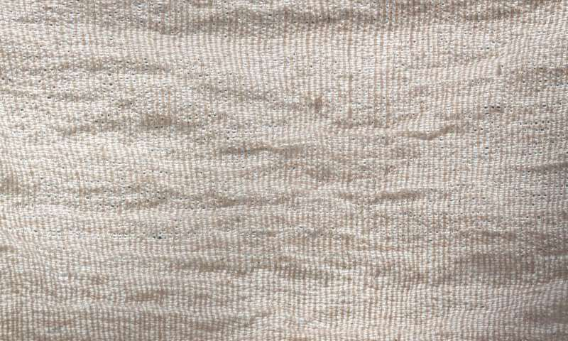

5 minutes excerpt from 38 minutes of real time video recording of spinning
ALL I HAVE IS TIME
2015, 38 minutes real time video recording of spinning and fabric installation
My search for the simplest action that creates something tangible through time led me to the acts of spinning and weaving.
What interests me is the ubiquity and similarity of spinning and weaving in diverse cultures through time and space.
It makes me possible to set up the general process that focuses on the act itself rather than specific cultures or techniques.
For more than a year, I have been spinning thread from the old cotton bedding obtained from my mother, and weaving it into a fabric.